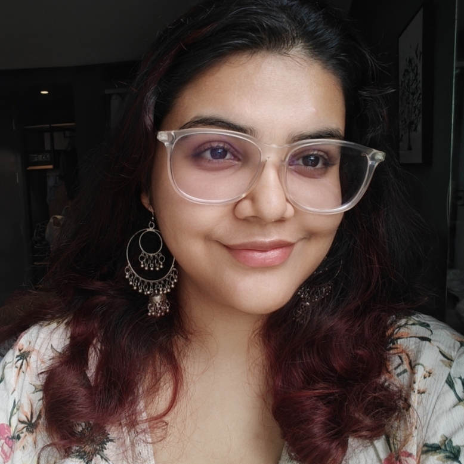
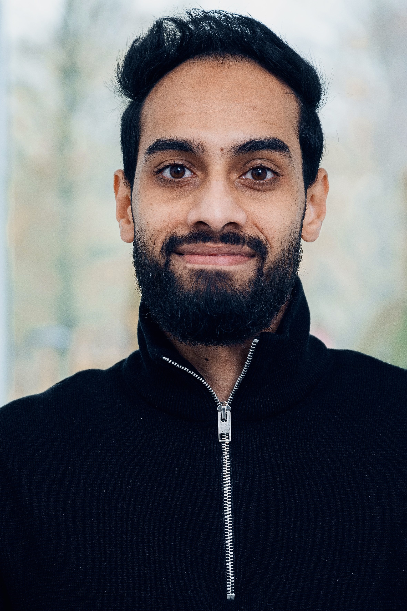
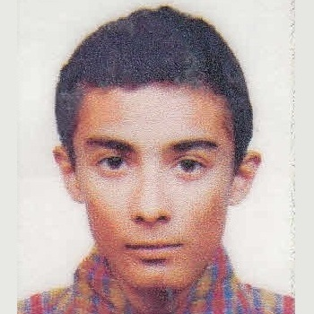
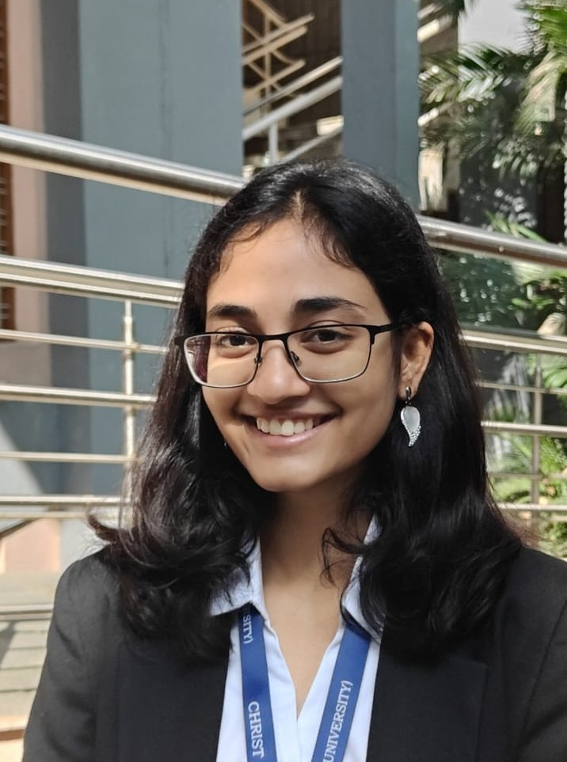

Below are the brave souls (past and present) who have undergone the
Wax On, Wax Off journey with me. Each of them has not only mastered the science
but also survived my Jack of all, Master of None approach to supervision -
a path that involves a heavy dose of rigorous discussion and the occasional
hour-long tangential journey through science, life, and stories.
Sriya Veerapaneni 2021 PhD candidate at UT Southwestern Medical Center, US (1st Intern at CCS) Omnivisor
Sriya obtained her integrated bachelor’s and master’s degree in Biological Sciences from the IIT, Madras.
For my undergraduate studies, I majored in Biological Sciences at IIT Madras. Through coursework and research projects at IIT Madras and CCS at NIMHANS, I built a strong foundation in computational biology and cancer research. I currently work on projects that integrate computer vision and tissue image analysis to study pathology in rectal cancer.
Sriya explored aperiodic components of EEG from Vipassana meditators and created computationaly efficient batch pipeline for the same during her time at CCS. She also worked on the automation of slow wave extraction from EEG data using YASA module.

Sruthi Kuriakose 2022 B.Tech CSE and MS, UCL, London Co-mentored with Dr. Arun
CS, ML
Sruthi setup gamified neurofeedback paradigm based on frontal midline theta, EEG based neuromodulation, ML for neurotech
- Aishwarya Swamy

Kankana Bhowmick 2022 BS-MS IISER Mohali Omnivisor
I graduated from IISER Mohali with a BS-MS degree in biological sciences. Although I had no initial experience in coding or data sciences, I found my passion in physiological data analysis of various kinds through my internship at CCS. I have also gone on to work on heart data (HRV) synchrony analysis for my Master’s thesis at Universität Konstanz in collaboration with Max Planck Institute of Animal Behaviour. I worked as Research assistant at IIT Jodhpur, Cognitive Engineering Lab under Dr. Dipanjan Roy.
Rahul is one of the people who made me fall in love with my subject
for which I'm forever grateful 🙂
Kankana did a first observership at CCS picking up basics of neurophysiology, EEG acquisition and analysis, sleep and polysomnography. She came for a second internship where she worked on EEG correlates of Working Memory, effects of tACS on working memory performance and learning EEG analysis
- Gayatri Nerpagar
- Adla Zubair

Nandani Kundal 2023 BS-MS, IISER Mohali Omnivisor
Master’s Thesis student at the Centre for Brain Research, IISc
Nandani was a BS-MS student at IISER Mohali. Her major interests lie in Neuroscience, Biochemistry and Molecular Biology.
Nandani Investigated aperiodic brain activity in sleep in Vipassana Meditators using FOOOF toolbox

Abin Jacob 2023 PhD Scholar at UoL & Founder of CalypsoBCI Co-mentored with Dr. Arun
I am interested Interested in Translational Science, Brain-Computer Interfaces and Entrepreneurship
Abin worked on mental state detection from EEG using wearable devices
Neetu M 2024 Project staff in Dept. of Psychiatry, NIMHANS Co-mentored with Dr. Arun
Neetu has interests in analytics, microstates in EEG.
Neetu did her masters dissertation on EEG Microstates, Schizophrenia and Polysomnography

Deepshik Sharma 2025 B.Tech CSE Collaborated with Dr. Arun and Dr. Ravindra
Deepshik has major interest in maching learning and diving to the bottom of things.
Deepshik spent days around Tobii Eyetracker and built Python frameworks to run eye tracking experiments with PyGame and generate heatmaps of gaze. He teamed up with Siddharth to deepen brain age index project
Siddharth Rajesh 2025 BSc Neuroscience & Psychology graduate (Sydney Univ) Omnivisor
Siddharth is a partial Engineer and switched to Neuroscience and an aspiring Neurophilopher. While he pursued Neuroscience in his bachelors, he see himself as a philosopher at heart. His core drive for philosophy and a deeper sense of curiosity comes from his pursuit of truth. Truth of the self, the universe, and everything between and beyond (if there is one).
Siddharth is understanding Brain Age Index from TUH big dataset and building ML/DL models to better predict brain age from EEG data

Manasa Marthala 2025 MSc. Neuropsychology student at CHRIST University Omnivisor
Manasa is a neuropsychology student looking to build stronger hands-on experience with EEG and research methods. Her interests span how people think, perceive, and make decisions when interacting with technology, and how tools like AI can help reveal subtle patterns in behaviour and brain signals.
Manasa is exploring the Heart-Brain Interactions from EEG data collected during working memory paradigm